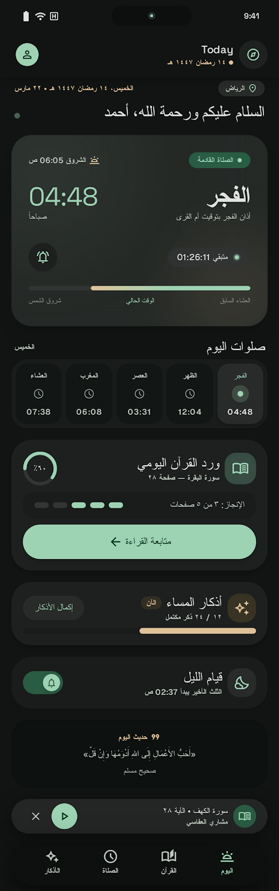
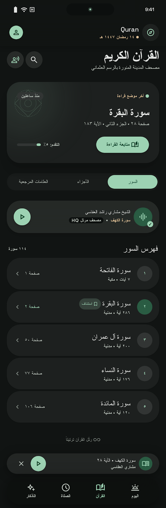
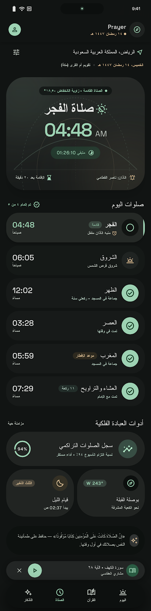
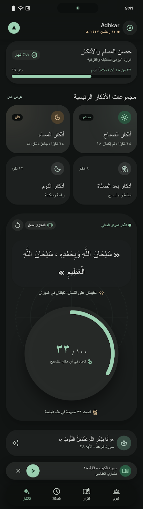

السكينة اليومية، والدقة الفلكية
في تطبيق واحد فائق الجمال
تطبيق إسلامي مصمم بعناية متناهية مستوحى من لغة Aetherial Astrolabe. يجمع بين حسابات مدار الشمس الفلكية، تلاوة القرآن الكريم، الأذكار التفاعلية، بث إذاعة القرآن الكريم من القاهرة، مع صفر إعلانات وصفر تتبع للخصوصية.
واجهات التطبيق الأربعة الأصلية
تصميم الأسطرلاب الأثيري عالي الدقة (OLED Optimized)




راديو إذاعة القرآن الكريم من القاهرة
استمع للبث المباشر الآن مباشرة من متصفحك أو عبر التطبيق
طريقة تثبيت التطبيق على هاتف iPhone
مجاناً وبدون الحاجة لحساب مطور Apple مدفوع
تحميل ملف الحزمة (Deen.ipa)
قم بتحميل ملف الـ IPA مباشرة إلى هاتفك من زر التحميل بالأعلى أو من صفحة الـ Releases على GitHub.
التثبيت عبر SideStore أو AltStore (موصى به)
افتح تطبيق SideStore أو AltStore على هاتفك، اضغط على زر (+)، واختر ملف IslamicCompanion.ipa ليتم توقيعه بحساب Apple ID الشخصي مجاناً.
التثبيت عبر Sideloadly (من الكمبيوتر)
إذا كنت تفضل تثبيته عبر كابل الـ USB، افتح برنامج Sideloadly على حاسوبك واسحب ملف الـ IPA واضغط Start.